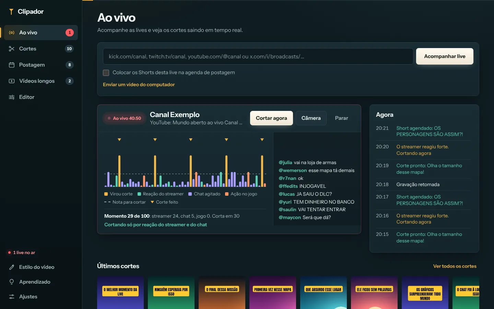
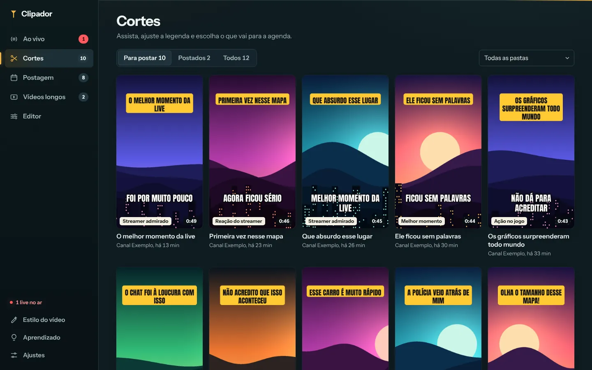
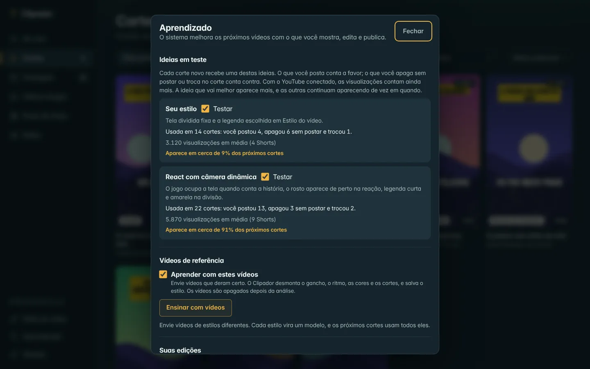

Acompanhe a live em tempo real
Veja a força de cada momento, o chat e os cortes saindo enquanto a transmissão continua.

Versão 1.19.0 · Windows 10 e 11
O Clipador acompanha a transmissão, encontra os melhores momentos, diz quais cortes têm mais chance de viralizar e entrega Shorts e vídeos longos editados, com legenda em português.

28transições
22modelos de legenda
108efeitos sonoros
44fontes
5formatos de tela
Nada de mandar a sua live para um servidor de outra empresa. Os vídeos e os cortes ficam com você.
Clique em Assistir a edição e acompanhe cada passo enquanto ele acontece: a fala sendo ouvida, a história sendo escolhida, a câmera trocando de lugar e as legendas entrando.
Veja a força de cada momento, o chat e os cortes saindo enquanto a transmissão continua.

Cada corte ganha uma nota de potencial de viralizar, com o motivo: a reação da live, o gancho dos primeiros segundos, se a história está completa e o ritmo. As dicas mostram o que mudar antes de postar.

O Clipador testa jeitos diferentes de editar, como a câmera dinâmica que mostra o jogo na ação e o rosto do streamer na reação. O que você posta e o que dá mais visualizações passa a aparecer mais.

Timeline com várias faixas, 28 transições, efeitos de voz, legenda que segue quem fala e prévia no seu vídeo antes de aplicar.

Neon, fogo, ouro, glitch e outros efeitos em uma legenda ou em todas de uma vez.

Organize os Shorts por pastas e horários. Vídeos longos só saem depois da sua revisão.

O Clipador acha o rosto e o jogo sozinho. Se quiser, troque o formato em qualquer corte.
Mínimo
Recomendado
Windows 10 ou 11, 64 bits. Não precisa de placa de vídeo. O Clipador escolhe o modo sozinho pelo seu computador, e você pode trocar em Ajustes.
Visual novo com ícones, busca de ações com Ctrl+K, atalhos de teclado, tour de boas-vindas e Ajustes reorganizados.
Escolha o que você quer nos cortes das lives gravadas, selo da live na tela, modo leve do processador, títulos que criam curiosidade e tecla C para cortar na hora.
Os cortes abaixo do potencial configurado são refeitos sozinhos, procurando em todo o trecho da live e, se preciso, juntando com as cenas mais fortes da mesma live.
O gancho do começo só entra quando o auge se entende sozinho, e aprende com o que você tira. A fila de edição não fica mais parada enquanto a legenda baixa, e um botão cancela todas as edições de uma vez. O instalador também fecha o Clipador sozinho antes de atualizar.
Selecione vários cortes para apagar ou marcar como postados de uma vez.
Shorts que abrem com o auge do momento e voltam para o começo da história, para prender nos primeiros segundos.
Cortes com potencial baixo são melhorados sozinhos antes de ficarem prontos.
Várias lives ao mesmo tempo com um único colar de links, e os momentos mais fortes editados primeiro.
Assista o Clipador editando cada corte, passo a passo, e poste só os cortes com mais potencial de viralizar.
Legendas mais certeiras em português, com o modelo large-v3-turbo, nomes das suas lives e correções que o Clipador aprende.
20 modelos de legenda do editor no Estilo do vídeo e escolha da fonte da legenda e do título.
Ideias de edição em teste: o Clipador compara jeitos de editar e usa mais o que você posta e o que dá mais visualizações.
Câmera dinâmica, que mostra o jogo na ação e o rosto do streamer de perto na reação, legenda React e o seu @ no vídeo e no final.
Potencial de viralizar em cada corte, com o motivo da nota e dicas do que mudar.
Cortes com começo, meio e fim, posts de frase para o feed e os stories, e câmera que segue quem está falando.
Editor renovado, com miniaturas na timeline, efeitos de voz, filtros, exportação para outros editores e tradução de legendas.
É um projeto feito no Brasil, por uma pessoa. Qualquer apoio ajuda a continuar melhorando o programa toda semana.
De graça e leva 5 segundos. Ajuda mais gente a encontrar o projeto.
Dar uma estrelaQualquer valor. Copie a chave ou o código "Pix copia e cola" e cole no app do seu banco.
Conhece alguém que faz cortes de live? Mande o site para essa pessoa.
Hoje o download é liberado para quem recebeu o convite por e-mail. Com a conta do GitHub convidada aberta no navegador, o instalador baixa na hora pelo botão Baixar.
Sim. Jogo, react, conversa, IRL e podcast. O Clipador compara cada momento com o ritmo da própria live, então funciona em chats pequenos e gigantes.
Ele junta três sinais: o chat acelerando e reagindo (risada, choque, hype, pedido de clipe), a voz do streamer e a ação na tela. Quando os sinais passam do normal da live, o corte sai. Você também pode cortar na hora com o botão Cortar agora ou a tecla C.
Não. É uma estimativa feita com o que o Clipador sabe do corte: a força da reação, o gancho dos primeiros segundos, se a história está completa, o ritmo e a emoção. Com o YouTube conectado, ele também usa o que já funcionou no seu canal.
O aviso aparece para programas novos que ainda não têm certificado de assinatura. Clique em Mais informações e depois em Executar assim mesmo. Baixe sempre pelo botão deste site.
Editar vídeo usa bastante o processador. Em Ajustes, escolha o modo leve: ele usa metade dos núcleos e prioridade baixa, demora um pouco mais e o computador continua usável. A gravação da live nunca fica mais lenta.
Na pasta Vídeos\Clipador, ou na pasta que você escolher. Tudo fica no seu computador.
Sim. Troque o título, corrija a legenda, mude o formato ou abra no editor completo, com timeline, transições, efeitos e textos.
O Clipador avisa quando sai uma versão nova. É só instalar por cima: seus cortes e ajustes continuam lá.
Corte e publique apenas conteúdo que você tem permissão para usar. Muitos streamers liberam cortes com crédito, e o Clipador já coloca o crédito do canal em cada vídeo.
O download está liberado para quem recebeu o convite por e-mail. Com a conta do GitHub convidada aberta neste navegador, o instalador começa a baixar na hora.
Se aparecer "Página não encontrada", sua conta ainda não tem acesso.